Skjern 1
Ziemlich feinkörniger weiß-grau-blauer Granit mit roten Einsprengungen
Größte Höhe: 96 cm
Breite (unten): 77 cm
Größte Dicke:14 cm
Runenhöhe: 17 cm
Runeninschrift :
... Osbiorn ... sein ... Haralds ...
Skjern 2
Feinkörniger, geschichteter graublauer Granit mit zahlreichem roten Korn
Größte Höhe: 193 cm
Breite Frontseite: 48 cm
Dicke ca: 47 cm
Maskenfeld: 64 x 33,5 cm
Runenhöhe: 13 - 17,5 cm
Runeninschrift :
Sasgerd, Finulfs Tochter, errichtete den Stein für Odinkar, Osbiorns Sohn, den Teuren (d.h. den Vorzüglichen/Vornehmen) und jenen Fürstentreuen. Ein Zauberer (soll) der Mann (werden), der dieses Denkmal zerstört.
53 - Skjern - 2 Runensteine
- Letztes Update 10.09.2025
| Navidaten: 56.45515 9.75259 oder: Gamle Randersvej 18, 8830 Tjele |
Listennummer : DR 80 / DK MJy 21
Transliteration: ... usbiaur... | ... | ...ur : si(n) | ... harals : h...
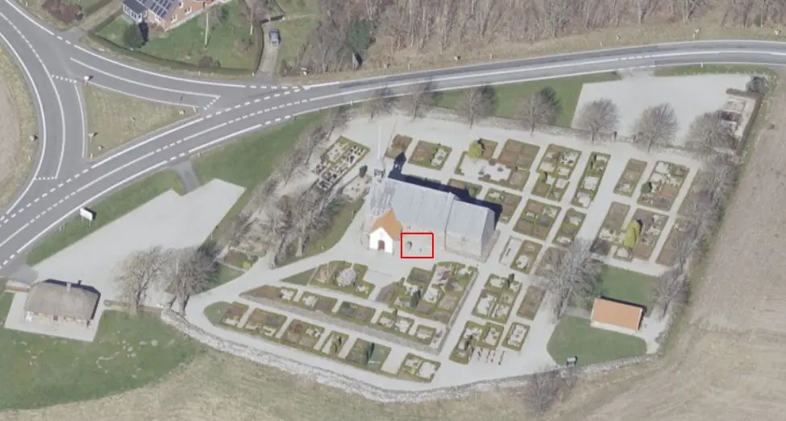
Das ist ein Luftfoto vom 02.04.2023 von Skråfoto - Lizenz: CC BY 4.0 - das die Kirche von Skjern zeigt. Skråfoto ist eine Webanwendung, die von Klimadatastyrelsen weltweit kostenlos bereitgestellt wird. Die Aufnahmen werden seit 2017 alle zwei Jahre erneuert und neben einer Senkrechtaufnahme wird ein Schrägbild aus jeder Himmelsrichtung angeboten, das man über eine Adresssuche aufrufen kann. Den Standort der beiden Runensteine habe ich hier rot umrandet.
Das Bruchstück war bis gegen Ende des Jahres 1830 im Fundament der Skjern Kirche eingemauert, so dass einzelne Runen erkennbar waren. Durch den Pfarrer der Kirchen in Hjermind, Lee und Hjorthede (vom 01.06.1798 bis zum 05.04.1857), Pastor Hans Bjerregaard (*22.02.1766 - 12.01.1860, Konsistorialrat - link-LIVES),


Bildquelle: Trøst-Hansens sognekort - Nr. 2959 / Digitale Sammlung der Königlichen Bibliothek in Kopenhagen / Lizenz jeweils: Public Domain beide vermutlich von 1828 / Bildnis seines Grabsteines in Hjermind
der wegen einer vakanten Stelle zu der Zeit auch in Skjern die Messe abhielt, wurde er entdeckt. Er hat daraufhin eine schriftliche Nachricht an die Altertümerkommision in Kopenhagen auf den Weg gebracht. Das Bruchstück wurde auf seine Veranlassung hin herausgenommen und 1824 im Waffenhaus aufgestellt - Laut P.G. Thorsen - Band II, S. 175 - erfolgte dies aber erst im Jahr 1838.
Dieser Pastor Hans Bjerregaard war nach meinen Internet-Recherchen nicht nur der einfache Dorfpfarrer. Über die Webseite der Gemeinde Hjermind kann man eine ausführliche Abhandlung zu seiner Historie - in dänischer Sprache - nachlesen. In seinen Pfarreien ließ er teilweise auf eigene Kosten Schulen bauen und führte ein planmäßiges Schulwesen ein. Der Mann steht aber auch hinter der Pflanzung von über 4 Millionen Obst- und Waldbäumen in Mitteljütland. Dies führte sowohl zu einem Besuch von König Friedrich VI. (* 28. Januar 1768 - 3. Dezember 1839, König von 1808-1839)
 Bildquelle:
Wikipedia - Lizenz:
Public Domain
Bildquelle:
Wikipedia - Lizenz:
Public Domain
am 17.06.1826 als auch wahrscheinlich mit zu dem Grund für den mehrtägigen Besuch des Dichters Hans Christian Andersen (*02.04.1805 - 04.08.1875 - link-LIVES - Begräbnisprotokoll) - Konfirmation ? - Dansk Demografisk Database)
 Bildquelle:
Wikipedia - Lizenz:
Public Domain
Bildquelle:
Wikipedia - Lizenz:
Public Domain
ab dem 28.08.1859. Dieser hat in seinen Tagebüchern mehrere Eintragungen zu seinem Besuch in Hjermind / seinen Unterhaltungen mit dem ca. 90-jährigen Pastor / der Besichtigung des Runensteins aufgenommen. Für beide Besuche wurde ein Gedenkstein errichtet. Diese sind auch im Pfarrgarten zu sehen. 1848 wurde Pastor Hans Bjerregaard zum Ritter vom Dannebrog und 1853 zum Dannebrogsmænd (Dannebrogmänner = Orden Dannebrog-Kreuz in Silber) ernannt. Er wurde auch 1828 zum "Konsistorialraad" ernannt, eine Ehrung für besonders verdiente Priester.
Literaturhinweise:
Edvin Sevelsted: Fem gange Bjerregaard - S. 28 bis 52 - Ausführliche Lebensbeschreibung von Pastor Hans Bjerregaard in dänischer Sprache
H.C. Andersen og Hans Bjerregaard i Hjermind 1859 (7)
Im Waffenhaus der Skjern Kirche fand ihn im Jahre 1840 Rasmus Henrik Kruse (*07.08.1796 - 30.05.1877, Landschaftsmaler - link-LIVES - Heirat 21.12.1851)
 Bildquelle:
Det Kgl. Biblioteks billedsamling - Lizenz:
Public Domain
Bildquelle:
Det Kgl. Biblioteks billedsamling - Lizenz:
Public Domain
vor. Er fertigte eine Zeichnung an, die sich heute in seinem Werk "Nørre Jyllands Mærkværdigheder i det 19. Aarh. Hs. Bd 1-2 (med) Tillæg 1-2", genauer gesagt im Band II, Nr. 15 zwischen den S. 41 und 42, befindet. In seinem Ergänzungsband Tillæg 1 von 1856 hat er auf der S. 12 einen Bericht zur Verlegung des Runensteins aufgenommen.
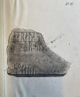 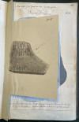 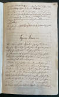 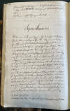 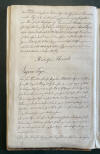


Dieses Werk wird heute im Nationalmuseum in Kopenhagen, Antikvarisk-Topografisk Arkiv, aufbewahrt. Dort durfte ich am Dienstag, 27.09.2022, zu Gast sein und die vier Bände in Händen halten und fotografieren.
Erst im Jahre 1899 wurde das Bruchstück außen auf dem Kirchhof, bei dem großen Runenstein Skjern 2, aufgestellt. Der Runenstein steht heute so wie er aufgestellt wurde auf dem Kopf und die Inschrift ist bei normalen Lichtverhältnissen so gut wie gar nicht mehr zu erkennen. Die Inschrift wird in die Zeit 970 - 1020 datiert. Sie verläuft auf einer Breitseite des Steins in Parallelordnung und beginnt in der unteren, rechten Ecke des Steins. Mette Iversen schreibt in dem kleinen Büchlein mit dem Titel "Fra Runesten til Runesten i Midtjylland" aus dem Jahr 2000 auf der S. 30, dass es sich nbei dem erwähnten "Harald" vielleicht um Harald Blauzahn (*um 910 - 01.11.985/86) handeln könnte. Die beiden Runensteine von Skjern gehören über die Inschrift sicher zusammen. Dann wäre der hier erwähnte Osbjörn der Vater des Odinkar auf dem Stein 2.
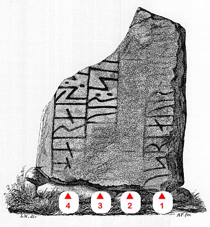
Bildquelle: Zeichnung von Magnus Petersen aus dem Jahr 1877 - Leserichtung von mir eingezeichnetVon Finnur Magnusson (dänisch auch Finn Magnusen; * 27. August 1781 in Skálholt/Island; 24. Dezember 1847 in Kopenhagen, isländischer Philologe und Archivar - link-LIVES)
 Bildquelle:
Wikimedia - Lizenz:
Public Domain
Bildquelle:
Wikimedia - Lizenz:
Public Domain
gibt es zu diesem Runenstein in der Tageszeitung "Dagen" vom Donnerstag, 03.02.1842 diesen Bericht:
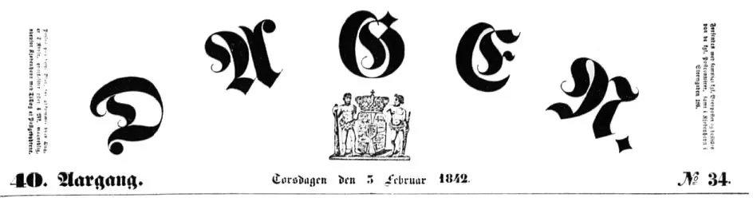
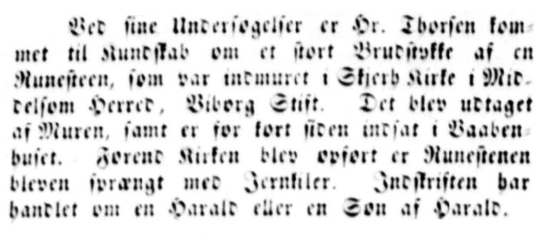
Übersetzung: "Bei seinen Untersuchungen kam Hr. Thorsen zur Besichtigung eines großen Bruchstücks eines Runensteins, der in der Skjern Kirche in Middelsom Harde, Bistum Viborg, eingemauert war. Er wurde aus der Mauer herausgenommen und für kurze Zeit im Waffenhaus aufgestellt. Dann wurde er vor der Kirche mit Eisenstützen aufgestellt. Die Inschrift handelt von einem Harald oder einem Sohn von Harald."
Prof. Jens Jacob Asmussen Worsaae (*14.03.1821 - 15.08.1885, dänischer Archäologe und Vorgeschichtler - link-LIVES - Bestattungsprotokoll)
 Bildquelle: Fotografie
zw. 1863-1900 von Fotograf Budtz Müller
(*26.12.1837 -
30.12.1884) -
Det Kgl. Biblioteks billedsamling - Lizenz:
Public Domain
Bildquelle: Fotografie
zw. 1863-1900 von Fotograf Budtz Müller
(*26.12.1837 -
30.12.1884) -
Det Kgl. Biblioteks billedsamling - Lizenz:
Public Domain
hat die Kirche am 22.09.1850 besucht und in seinem "Notesbog X" auf den S. 120 (Stein 2) und S. 121 (Stein 1) Notizen zu den beiden Runensteinen und deren Runeninschrift niedergeschrieben.


Seine Notizbücher werden heute im Nationalmuseum in Kopenhagen, Antikvarisk-Topografisk Arkiv, aufbewahrt. Dort durfte ich am Dienstag, 27.09.2022, zu Gast sein und sie in Händen halten und fotografieren.
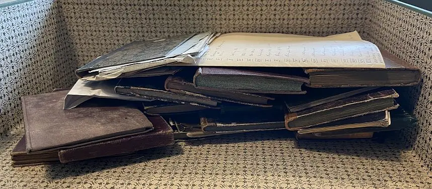
Das Runenstein Bruchstück findet Erwähnung in den beiden großen dänischen Runenwerken. So bei
Prof. P. G. Thorsen (*07.08.1811 - 06.05.1883, Bibliothekar, Runenforscher und Historiker - link-LIVES - Artikel: Levnedsbeskrivelser af de ved Københavns Universitets Firehundredaarsfest promoverede Doktorer, Illustreret Tidende 1882, Nr. 1235 - vom 27.05.1833 / Grabstein in Varde / Eheschließung in Varde am 19. August 1848)
 Bildquelle:
Fotograf Budtz Müller (*26.12.1837-30.12.1884) -
Det Kgl. Biblioteks billedsamling - Lizenz:
Public Domain
Bildquelle:
Fotograf Budtz Müller (*26.12.1837-30.12.1884) -
Det Kgl. Biblioteks billedsamling - Lizenz:
Public Domain
bringt in seinem Band "De danske runemindesmærker beskrevne og forklarede, anden Afdeling, Jyllands Runemindesmærker, I. Afbildninger, 1879" unter der Nr. 67 diese Zeichnung von Prof. Julius Magnus Petersen (*04.09.1827 - 31.01.1917, Archäologischer Zeichner und Restaurator - link-LIVES - Bestattungsprotokoll)
 Bildquelle:
Fotografie
von 1903 von Fotograf Marius Christensen
(*24.06.1874 -
25.06.1907) -
Det Kgl. Biblioteks billedsamling - Lizenz:
Public Domain
Bildquelle:
Fotografie
von 1903 von Fotograf Marius Christensen
(*24.06.1874 -
25.06.1907) -
Det Kgl. Biblioteks billedsamling - Lizenz:
Public Domain
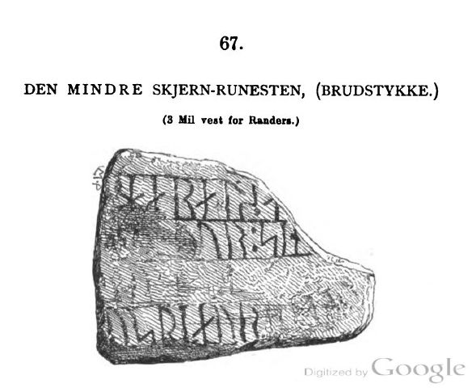
In seinem 1880 erschienenen Band II, Text, macht er auf der S. 63-64 und nochmals auf der S. 175 jeweils kurze Ausführungen zu diesem Runenstein.
Prof. P. G. Thorsens Nachlass (Bezeichnet als: P. G. Thorsens optegnelser, tegninger m.m. vedrørende runer og runemindesmærker - überführt aus der Kopenhagener Universitätsbibliothek 1929 - Gemäß Ministerialschreiben vom 04.03.1929; früher benannt als Additamenta 612 kvart - findet sich in der Königlichen Bibliothek unter NKS 3296 (in mehreren einzelnen Pappschachteln).
Bei meinem Besuch in Königlichen Bibliothek in Kopenhagen (Den sorte Diamant) habe ich am 27.09.2022 in der Pappschachtel 17 diese Zeichnung von Prof. Julius Magnus Petersen entdeckt, die er auf den 04.10.1869 datiert hat. Daneben fand sich noch in dieser Pappschachtel quasi eine Kopie der Zeichnung von Rasmus Henrik Kruse - siehe oben.


Laut Lis Jacobsen / Erik Moltke - Danmarks Runeindskrifter - 1942 - Nr. 80 - Sp. 115 - soll es in Prof. P. G. Thorsens Nachlass, in der Pappschachtel 17, eine Nachricht vom 16.10.1838 zum Fundort und seiner Herausnahme dieses Runensteins von einer Person namens "Seddel" mit einer Bleistift Zeichnung geben. Davon fand ich bei meinem Studienbesuch in der Königlichen Bibliothek in Kopenhagen im September 2002 allerdings nichts vor. Meint er den Pastor Hans Bjerregaard?
Prof. Ludv. F. A. Wimmer (*07.02.1839 - 29.04.1920, Philologe und Runenforscher - link-LIVES - Politiets registerblade - Bestattungsprotokoll)
 Bildquelle:
Fotografie zw. 1877-1900 von Fotograf Hansen & Weller
-
Det Kgl. Biblioteks billedsamling - Lizenz:
Public Domain
Bildquelle:
Fotografie zw. 1877-1900 von Fotograf Hansen & Weller
-
Det Kgl. Biblioteks billedsamling - Lizenz:
Public Domain
bringt seine Forschungsergebnisse in seinem großformatigen Werk "De danske runemindesmærker undersøgte og tolkede af Ludv. F. A. Wimmer, Andet Bind, Runestenene i Jylland og på øerne. 1899-1901" unter der Nr. 37, S. 177ff. Er betitelt darin allerdings den kleineren Stein als "Skærn II" und den großen Runenstein als "Skærn I". Er hat den Runenstein persönlich vor Ort am 24. August 1877 und am 16./17. Juli 1882 untersucht. Er schreibt dort u.a.: "...Der kleinere Runenstein in Skjern, den ich bei meinen Nachforschungen außerhalb des Deichs am Friedhofseingang in der Nähe des größeren Steins liegend und wie dieser mit Erde und Gras bedeckt fand, befand sich früher im Fundament der Kirchenmauer, so dass einzelne Runen sichtbar waren... - ...die beiden Runensteine wurde 1889 gemeinsam neben der Kirche aufgestellt."
Die darin abgebildete Zeichnung von Prof. Julius Magnus Petersen möchte ich hier wiedergeben - eigener Scan.
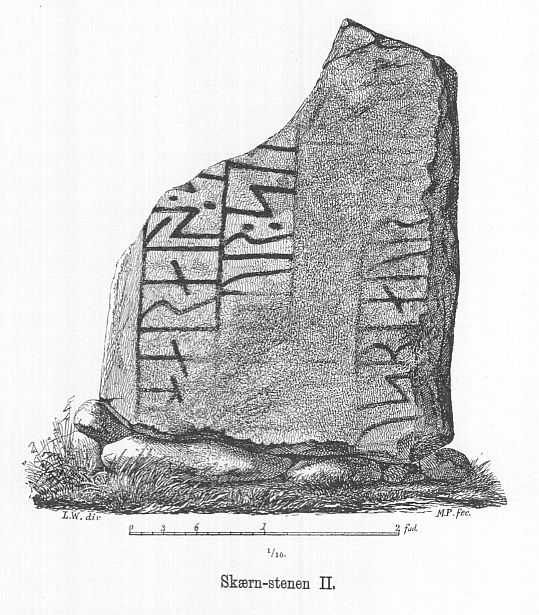
Prof. Ludv. F. A. Wimmer hat seine jahrelangen Aufzeichnungen der
"Kgl.
Bibliotek" in
Kopenhagen überlassen. Ein
Verzeichnis darüber wurde 1915 in Buchform herausgegeben
"Collectio
runologica Wimmeriana : Fortegnelse over
Ludv.
F.
A.
Wimmers runologiske o.
a.
Samlinger
i Det kgl.
Bibliotek"
-
In seinen Unterlagen in der Königlichen Bibliothek befindet sich in "III - Originaltegninger af de danske Runemindesmærker, udførte paa Undersøgelsesrejserne af Magn. Petersen og kontrollerede paa Stedet af Ludv. Wimmer, samt Prøvetryk af de paa Grundlag af de nævnte Tegninger, Aftryk o. s. v. til De danske Runemindesmærker" udførte Afbildninger med Wimmers Rettelser"


unter der Nummer 48 diese Zeichnung vom 24.08.1877 von Prof. Julius Magnus Petersen.

Zwischen Montag, 26.09.2022, und Mittwoch, 28.09.2022, habe ich in der Königliche Bibliothek - Den sorte Diamant - in Kopenhagen diverse Unterlagen/Dokumente/Zeichnungen usw. nach Online-Vorbestellung zur Ansicht erhalten. Ich durfte mir Aufzeichnungen machen, sie aber auch uneingeschränkt fotografieren.
Diese unten eingefügte tolle Fotografie hat Poul Nørlund (*04.11.1888 - 26.05.1951, Archäologe - link-LIVES - Politiets registerblade - von 1938 bis 1951 Direktor des Dänischen Nationalmuseums) im Jahre 1924 aufgenommen.
 Bildquelle:
Königliche Bibliothek Kopenhagen -
Lizenz:
Public Domain
Bildquelle:
Königliche Bibliothek Kopenhagen -
Lizenz:
Public Domain

Quelle: Digitale Datenbank des Nationalmuseums Kopenhagen - Lizenz: CC-BY-SA
Fotografie von Erik Moltke (*04.04.1901 - 19.10.1984, Runologe, Historiker - link-LIVES) vom 09.07.1930.
 Bildquelle: Scan von Buchumschlag "Runerne i Danmark og ders
oprindelse" - Erik Moltke - 1976 - Lizenz:
CC-BY-SA
Bildquelle: Scan von Buchumschlag "Runerne i Danmark og ders
oprindelse" - Erik Moltke - 1976 - Lizenz:
CC-BY-SA
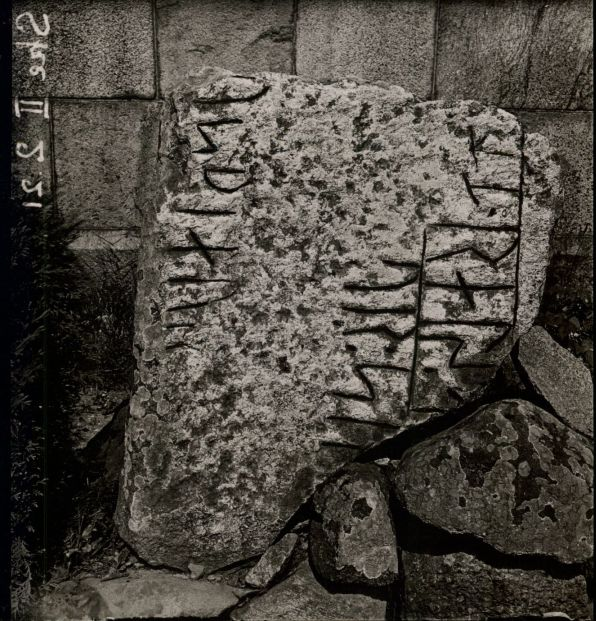
Quelle: Digitale Datenbank des Nationalmuseums Kopenhagen - Lizenz: CC-BY-SA
Im Vorfeld zu dem 2016 erschienenen Buch von Lisbeth M. Imer (*1973, Runologin am Nationalmuseum Kopenhagen) "Danmarks Runesten - en fortælling" reiste sie mit dem Fotografen Roberto Fortuna zur Bestandsaufnahme durch die Lande. Dieser hat die Runensteine abends bei Dunkelheit mit Schräglicht aufgenommen und darüber wirklich herausragende Fotos erzielt. Diese Aufnahme stammt vom 10.11.2011.
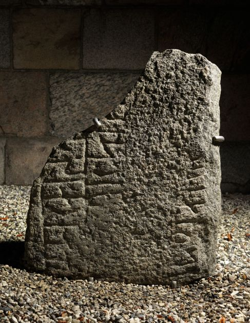
Quelle: Digitale Datenbank des Nationalmuseums Kopenhagen - Lizenz: CC-BY-SA
Meine Fotos meiner 2022er Jütland Wikinger Tour von diesem Runenstein habe ich hier. Die Aufnahmen entstanden am Montag, 06.06.2022, und am Donnerstag, 09.06.2022. Es war an beiden Tagen kein tolles Wetter - nasskalt!
Mal waren die Runensteine eher nass und dann mal eher trocken. Aber egal, bei dem Stein erkennt man hier mit normalem Licht nicht wirklich was von der Inschrift. Umso erstaunlicher was der Fotograf Roberto Fortuna mit seinem Hightech Equipment aus den Runen herausgekitzelt hat - siehe oben.
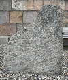 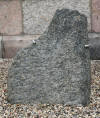 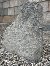 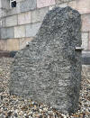 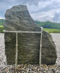 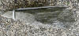


Davor war ich erstmals im Sommer 1984, am Mittwoch, 21.08.1991, am Donnerstag, 13.07.2000 und nochmals am Donnerstag, 25.08.2016, vor Ort (Foto im linken Frame). Meine Dias vom Sommer 1991 habe ich gerade - 23.11.2024 - über ein Lichtpult mit dem Smartphone abfotografiert und darüber selbst digitalisiert. Damals waren die beiden Runensteine massiv vom Flechten überzogen. Speziell auf dem Stein 1 - das sieht man hier trotz schlechter Bildqualität - war gar nix zu erkennen.
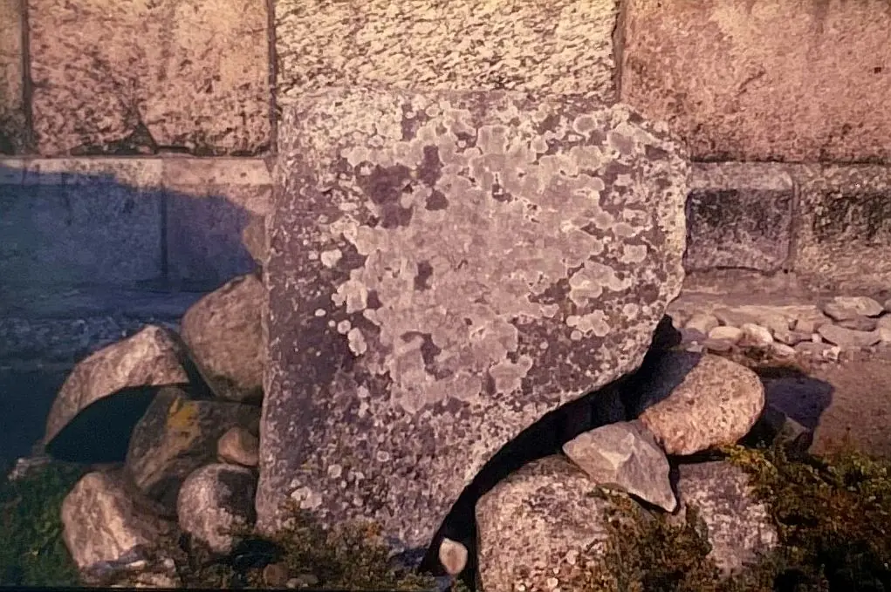
Den Eintrag zu diesem Runenstein aus der dänischen Runen Datenbank im Internet kann man hier abrufen.
Die Informationen in "Fund og Fortidsminder" zu dem Runenstein finden sich hier. Darin ist inzwischen dieser Zustandsbericht des Steinrestaurators Leif Vognsen aus dem Jahr 2018 eingebettet.
Über diesen Link finden sich zu dem Runenstein Informationen des Forschungsprojektes "Runes" der Akademie der Wissenschaften zu Göttingen.
Listennummer : DR 81 / DK MJy 22
Transliteration:
Seite A: sąskiriþr : risþi : stin : finulfs : tutiR : at : uþinkaur : usbiarnaR : sun : þąh : tura : uk : hin : turutin : fasta :
Seite B: siþi : sa : mąnr : is | : þusi : kubl : ub : biruti
Dieser sehr ansehnliche und gut erhaltene Runenstein wurde Anfang des Jahres 1843 vom damaligen Besitzer vom Skjern-Gård, Herrn F. Borch, entdeckt, der zu dieser Zeit die Ruinen der alten Skjern-Burg ausgraben ließ, um den kalkhaltigen Boden als Dünger auf seinen Feldern zu verwenden. Sobald der in der nordöstlichen Ecke des Schlossparks liegende Stein ans Licht gekommen war, sorgte Herr F. Borch für eine sorgfältige Erhaltung. Eine vorläufige Information über den interessanten Fund wurde von Pastor Götzsche aus Vester Velling (Vermutlich Henrik Götzsche, - auch: Henrich Christensen Gøtzsche - *26.09.1788 - 01.02.1850, Pfarrer in Vester Velling und Skjern zw. 1829-1843 - link-LIVES) am 24.03.1843 an die Altertümerkommision nach Kopenhagen, an deren damaligen Sekretär Carl Christian Rafn (*16.01.1795 - 20.10.1864, Altertumsforscher - link LIVES - Bestattungsprotokoll)
 Bildquelle: Zeichner
Magnus Petersen -
Det Kgl. Biblioteks billedsamling - Lizenz:
Public Domain
Bildquelle: Zeichner
Magnus Petersen -
Det Kgl. Biblioteks billedsamling - Lizenz:
Public Domain
gesandt (Antiquarisk Tidsskrift 1843-45, S. 8 und S. 51. Pastor Götsche schickte am 27.05. und am 12.07.1843 auch zwei Mitteilungen bezüglich des Runensteins an Finnur Magnusson (dänisch auch Finn Magnusen; * 27. August 1781 in Skálholt/Island; 24. Dezember 1847 in Kopenhagen, isländischer Philologe und Archivar - link-LIVES)
Bildquelle:
Wikimedia - Lizenz:
Public Domain
In der Hinterlassenschaft von Prof. P. G. Thorsen (*07.08.1811 - 06.05.1883, Bibliothekar, Runenforscher und Historiker - link-LIVES - Artikel: Levnedsbeskrivelser af de ved Københavns Universitets Firehundredaarsfest promoverede Doktorer, Illustreret Tidende 1882, Nr. 1235 - vom 27.05.1833 / Grabstein in Varde / Eheschließung in Varde am 19. August 1848)
Fotografie
zw. 1863-1900 von
Fotograf Budtz Müller (*26.12.1837 - 30.12.1884) -
Det Kgl. Biblioteks billedsamling
- Lizenz:
Public Domain
näheres siehe unten - fand ich bei meinem Besuch in Kopenhagen in der Kgl. Bibliotek (Den sorte Diamant) am 27.09.2022 den Original Brief von Pastor Götzsche an Finnur Magnusson vom 22.05.1843 den ich hier abbilde.
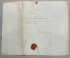 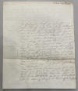 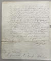


Zu der Information von Pastor Götzsche gibt es in der Antiquarisk Tidsskrift - 1843-45 auch zwei kurze Beiträge auf den S. 8 und S. 51. Aber die vohn ihm eingesandte Abbildunge ist leider nicht dabei.
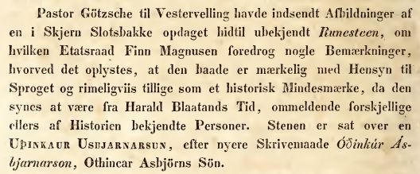
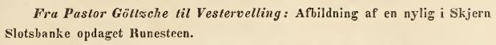
Es war eigentlich die Absicht des Eigentümers Borch, den Stein zur Kirche von Skjern zu bringen, um ihn dort aufzustellen. Aber dieses Vorhaben war mit so großen Schwierigkeiten verbunden, dass man letzlich davon absehen musste, den schweren Brocken bis zur hoch gelegenen Kirche zu bringen. Er wurde deshalb außerhalb der Friedhofseinfriedungsmauer, direkt am Eingang abgelegt. Dort fand ihn Ludv. F.A. Wimmer bei seinen Untersuchungen sowohl 1877 als auch 1882 fast vollständig mit Erde und Gras bedeckt. Auf Initiative des Direktoriums für Denkmalpflege wurde er schließlich 1889 doch noch an der Kirche errichtet. Er war als Grundstein in einem Treppengang - im nördlichen Bau des nordöstlichsten Teils - des Skjern Schlosses verwendet worden, welches zu Anfang des 17. Jahrhunderts zerstört wurde und seither eine Ruine war (siehe Literaturhinweis unten).
Dieser Runenstein verfügt über einen doppelten Schutz vor Gewalteinwirkung gegen ihn. Im Mittelfeld ist eine abschreckende Maske - mit großen, runden leeren Augenhöhlen, einer u-förmigen Nase, geöffnetem Mund und einem geflochtenen Bart - eingeritzt und auf der Oberseite des Steines ist die Verfluchungsformel angebracht. Dadurch sollte verhindert werden, dass der Stein entfernt oder beschädigt wird. Offensichtlich hat die Drohung gewirkt, da der Stein sehr gut erhalten ist.
Die Inschrift wird ebenfalls in die Zeit von 970 - 1020 datiert. Sie verläuft über zwei Steinseiten, beginnt auf der Breitseite (A) und wird auf der Oberseite (B) weitergeführt. Gelesen wird die in einer Spirale entlang der Steinkontur verlaufende Inschrift (A) von rechts unten beginnend bis zur Mitte hin. Auf der Oberseite geht es in der vorderen Linie von rechts nach links weiter, dann wendet sich die Richtung auf der hinteren Linie von links nach rechts - Bustrophedon (abwechselnde Schreibrichtung).
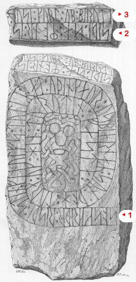
Bildquelle: Zeichnung von Magnus Petersen aus dem Jahr 1877 - Leserichtung von mir eingezeichnetMehrere Zeichnungen von dem Runenstein fertigte auch Rasmus Henrik Kruse (*07.08.1796 - 30.05.1877, Landschaftsmaler - link-LIVES - Heirat 21.12.1851)
Bildquelle:
Det Kgl. Biblioteks billedsamling - Lizenz:
Public Domain
in den Jahren 1843 und 1856. Die finden sich heute in seinem Werk "Nørre Jyllands Mærkværdigheder i det 19. Aarh. Hs. Bd 1-2 (med) Tillæg 1-2", genauer gesagt zum einen im Band II, Nr. 16 zwischen den S. 41 und 42, zum anderen hat er zwei neue Zeichnungen "g" und "h" sowie einen Text auf der S. 12-13 als Bericht zur Verlegung des Runensteins in seinem Ergänzungsband Tillæg 1 von 1856 aufgenommen.
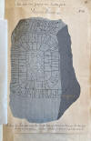 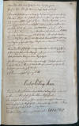 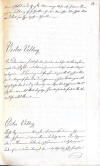 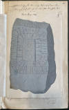 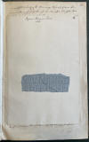


Dieses Werk wird heute im Nationalmuseum in Kopenhagen, Antikvarisk-Topografisk Arkiv, aufbewahrt. Dort durfte ich am Dienstag, 27.09.2022, zu Gast sein und die vier Bände in Händen halten und fotografieren. Die Seite 13 wurde mir dort dankenswerterweise nachträglich eingescannt und am 17.01.2023 per E-Mail übermittelt, da sie mir fehlte.
Prof. Jens Jacob Asmussen Worsaae (*14.03.1821 - 15.08.1885, dänischer Archäologe und Vorgeschichtler - link-LIVES - Bestattungsprotokoll)
Bildquelle: Fotografie
zw. 1863-1900 von Fotograf Budtz Müller
(*26.12.1837 -
30.12.1884) -
Det Kgl. Biblioteks billedsamling - Lizenz:
Public Domain
hat die Kirche am 22.09.1850 besucht und in seinem "Notesbog X" auf den S. 120 (Stein 2) und S. 121 (Stein 1) Notizen zu den beiden Runensteinen und deren Runeninschrift niedergeschrieben.
Seine Notizbücher werden heute im Nationalmuseum in Kopenhagen, Antikvarisk-Topografisk Arkiv, aufbewahrt. Dort durfte ich am Dienstag, 27.09.2022, zu Gast sein und sie ebenfalls in die Hand nehmen und fotografieren.
Carl Christian Rafn berichtete in seinem Werk von 1856 - "Antiquités de l'Orient, monuments runographiques" ab S. 204ff. über diesen Runenstein und fügte auf S. 205 diese Abbildung der Runenzeichen ein, wofür eine Zeichnung von Rasmus Henrik Kruse Pate stand.
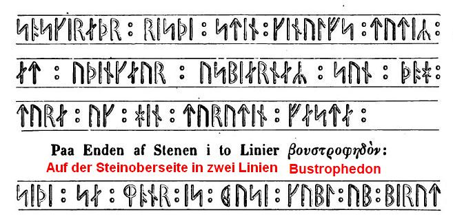
Sophus Bugge (*5. Januar 1833 - 8. Juli 1907 - norwegischer Philologe, der sich besonders mit der altnordischen Sprache und Literatur, aber auch mit der Runologie beschäftigte)
 Bildquelle:
Wikipedia
- Lizenz:
Public Domain
Bildquelle:
Wikipedia
- Lizenz:
Public Domain
hat in der Tidskrift for Philologi og Pædagogik, Band VII, aus dem Jahr 1866-67, auf der S. 345, Fußnote 1, eine kurze Abhandlung zu diesem Runensteintext.
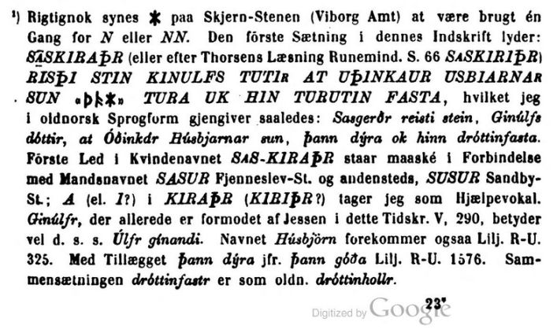
Sophus Bugge hat auch noch in "Arkiv för nordisk filologi, Band VIII, 1892" auf der S. 27 und 28 in der Fußnote 1 eine Anmerkung zu dem Runenstein gemacht:
"1) Udtrykket sun þąh tura (d. e. þann eller þann hinn dýra) paa den store Skjern-Sten i Jylland (Thorsen Nr. 22) henviser ikke til Fölesforholdet mellem den Afdöde og den Gjenlevende, men betegner den afdöde som en "hvem man satte höi Pris paa", "som blev holdt höit i Ære".
Übersetzung: "Der Ausdruck sun þąh tura - (Anmerkung: Laut DR, Nr. 81, S. 117, ist das "h" in þah wohl ein Schreibfehler für "n") - (d.h. þann oder þann hinn díra) auf dem großen Skjern-Stein in Jütland (Thorsen Nr. 22) bezieht sich nicht auf die emotionale Beziehung zwischen dem Verstorbenen und dem Lebenden, sondern bezeichnet den Verstorbenen als jemanden, auf den man einen hohen Preis setzt, der hoch geschätzt wurde.
George Stephens (*13.12.1813 - 09.08.1995, englischer Archäologe und Philologe)
 Bildquelle:
Minder fra min Virksomhed paa Arkæologiens
Omraade fra 1845 til 1908 von
Magnus Petersen (*04.09.1827 - 01.02.1917) auf der
Seite 265 - Lizenz:
Public Domain
Bildquelle:
Minder fra min Virksomhed paa Arkæologiens
Omraade fra 1845 til 1908 von
Magnus Petersen (*04.09.1827 - 01.02.1917) auf der
Seite 265 - Lizenz:
Public Domain
zeigt in seinem Werk "The old-northern runic Monuments of Scandinavia and England, Vol. II, 1867-68" auf der S. 789 diese frühe Zeichnung von Magnus Petersen (*04.09.1827 - 01.02.1917, Archäologischer Zeichner und Restaurator) - siehe Initialien "M.P." mittig direkt unter der Zeichnung - die auf einer colorierten Zeichnung von Rasmus Henrik Kruse (*07.08.1796 - 30.05.1877, Landschaftsmaler) von 1856 beruht.
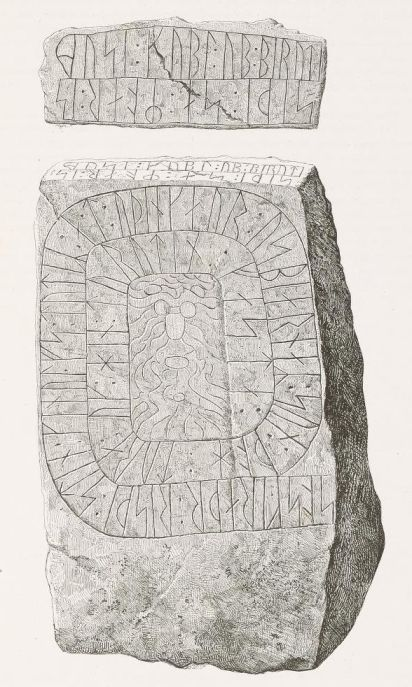
In seinem Werk "The old-northern runic Monuments of Scandinavia and England, Vol. III, 1884" macht er auf S. 336 - unter Hinweis auf seinen Aufsatz in Volume II, S. 789 - weitere Ausführungen zu diesem Runenstein und zu den Zeichnungen von Rasmus Henrik Kruse (*07.08.1796 - 30.05.1877, Landschaftsmaler) und von Magnus Petersen (*04.09.1827 - 01.02.1917, Archäologischer Zeichner und Restaurator).
George Stephens hat im Jahr 1878 außerdem noch in seinem Buch "Thunor the Thunderer, carved on a Scandinavian font of about the year 1000. The first yet found god-figure of our Scando-Gothic forefathers", auf der S. 27 ff. eine Abhandlung zu diesem Runenstein und gibt auf den S. 28 und 29 diese Zeichnungen wieder (Hier von mir untereinander geschnitten). Er führt darin aus, dass die Maske in der Steinmitte den Gott Thor darstellen soll. Er gibt auch an, dass die Zeichnung auf der von Kruse aus dem Jahr 1856 basiert. Sie wäre aber zu drei Buchstaben von Magnus Petersen 1869 verbessert worden. Die Zeichnung ist doch identisch mit der in seinem obigen Buch - das erschien aber schon ein Jahr früher 1867-68. Wie ist das dann bitte möglich? Komisch!
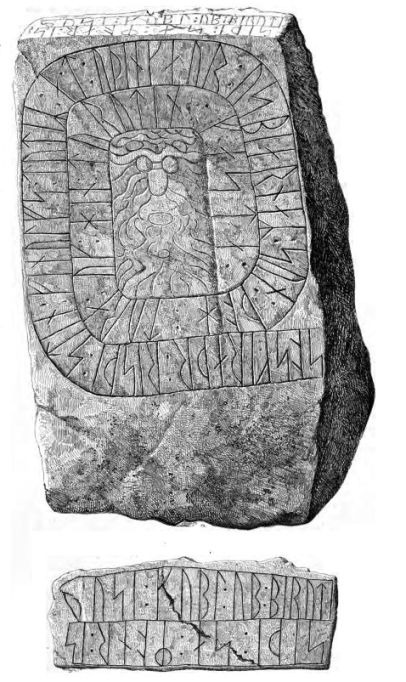
In der Hinterlassenschaft von Prof. P. G. Thorsen näheres siehe unten - fand ich bei meinem Besuch in Kopenhagen in der Kgl. Bibliotek (Den sorte Diamant) in der Pappschachtel Nummer 7 am 27.09.2022 einen Original Brief von Pfarrer Theodor Christian Taaffe (*23.03.1824 in Gundslev/Maribo - 21.03.1885 in Keldby/Møn, zw. 1864 und 1879 Pfarrer im Pastorat Langå, Torup und Sønder Vinge - link-LIVES)
 Bildquelle:
Trøst-Hansens sognekort -
Nr. 2965
- Lizenz:
Public Domain
Bildquelle:
Trøst-Hansens sognekort -
Nr. 2965
- Lizenz:
Public Domain
vom 11.05.1871 den er an P.G. Thorsen geschickt hatte. Darin macht er u.a. auch Ausführungen zu der Entzifferung der Inschrift dieses Runensteins im Hinblick auf das Wort "finulfs".


Der Runenstein findet Erwähnung in den beiden großen dänischen Runenwerken.
Prof. P. G. Thorsen bringt in seinem Band "De danske runemindesmærker beskrevne og forklarede, anden Afdeling, Jyllands Runemindesmærker, I. Afbildninger, 1879" unter der Nr. 22 diese beiden Zeichnungen von Prof. Julius Magnus Petersen (*04.09.1827 - 31.01.1917, Archäologischer Zeichner und Restaurator - link-LIVES - Bestattungsprotokoll)
Bildquelle:
Fotografie
von 1903 von Fotograf Marius Christensen
(*24.06.1874 -
25.06.1907) -
Det Kgl. Biblioteks billedsamling - Lizenz:
Public Domain
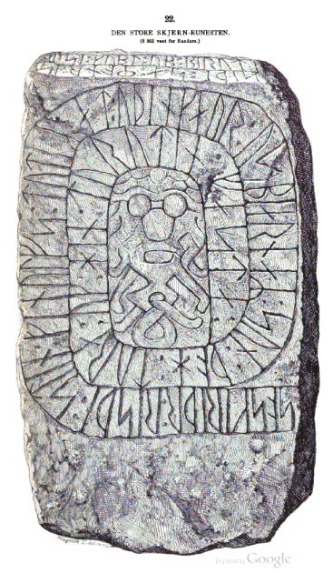
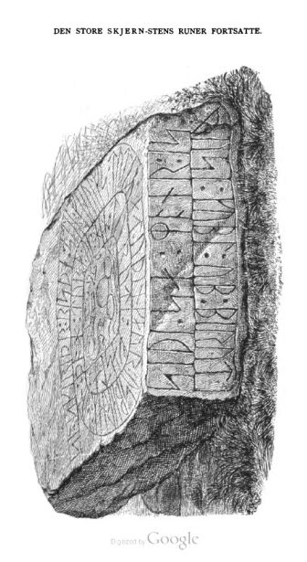
In seinem 1880 erschienenen "Band II - Text" macht er auf der S. 59-66 - für seine Verhältnisse relativ ausführliche - Ausführungen zu diesem Runenstein. Er liefert darin quasi selbst die Erklärung dafür. Es war eigentlich seine Absicht diesen Runenstein monografisch abzuhandeln, schreibt er. Dies unterblieb aber, da er bis 1869 nicht dazu kam ihn genau zu untersuchen.
Bei meinem Besuch in Kopenhagen in der Kgl. Bibliotek (Den sorte Diamant) habe ich in der Hinterlassenschaft von Prof. P. G. Thorsen - näheres siehe oben zu Stein 1 - am 27.09.2022 in der Pappschachtel 17 diese beiden Zeichnungen von Prof. Julius Magnus Petersen entdeckt, die er jeweils auf den 04.10.1869 datiert hat.


Prof. Ludv. F. A. Wimmer (*07.02.1839 - 29.04.1920, Philologe und Runenforscher - link-LIVES - Politiets registerblade - Bestattungsprotokoll)
Bildquelle:
Fotografie zw. 1877-1900 von Fotograf Hansen & Weller
-
Det Kgl. Biblioteks billedsamling - Lizenz:
Public Domain
veröffentlichte seine Forschungsergebnisse zu diesem Runenstein in seinem großformatigen Werk "De danske runemindesmærker undersøgte og tolkede af Ludv. F. A. Wimmer, Andet Bind, Runestenene i Jylland og på øerne. 1899-1901" über die Nr. 36, S. 170ff.
Diese u.a. Zeichnungen von Prof. Julius Magnus Petersen sind ein Scan aus der in meinem Besitz befindlichen Ausgabe.
Wimmer hat den Runenstein persönlich vor Ort am 24. August 1877 und am 16./17. Juli 1882 untersucht. Er betitelt in seinem Werk den kleineren Stein als "Skærn II" und den großen Runenstein als "Skærn I" - umgedreht zu den heutigen Bezeichnungen.
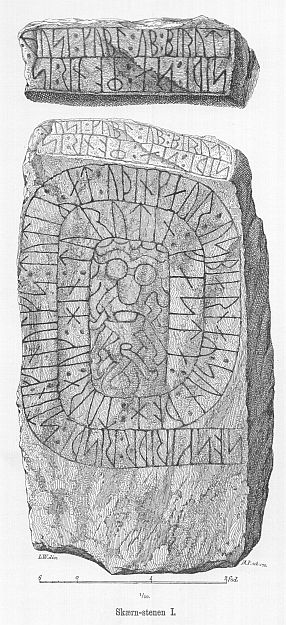
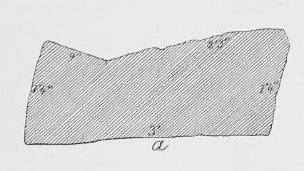
Im Nachlass von Prof. Ludv. F. A. Wimmer - näheres siehe oben zu Stein 1 - fand ich bei meinem Studienbesuch in Kopenhagen in der Kgl. Bibliotek am 27.09.2022 in der großen Pappschachtel III unter der Nummer 47 diese Zeichnung vom 24.08.1877 von Magnus Petersen.

In dem 1905 erschienenen Buch von Alexander Bugge (*30.12.1870 - 24.12.1929, Professor, norwegischer Historiker)
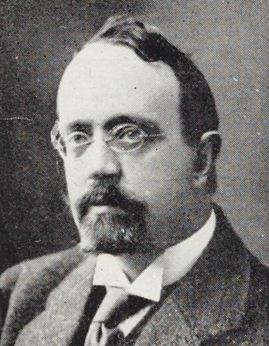
Bikldquelle: Wikipedia - Lizenz: Public Domain"Vesterlandenes indflydelse paa Nordboernes og saerlig Nordmaendenes ydre kultur, levesaet og samfundsforhold: I. Vikingestiden", führt er auf S. 340 aus, dass die Masken des Sjelle und des großen Skjern Steines wie Kopien der Maske des großen Aarhus Steins (Aarhus 4) aussehen.
Fotografie von Erik Moltke (*04.04.1901 - 19.10.1984, Runologe, Historiker - link-LIVES) vom 09.07.1930.
Bildquelle: Scan von Buchumschlag "Runerne i Danmark og ders
oprindelse" -
Erik Moltke
- 1976 - Lizenz:
CC-BY-SA
Quelle: Digitale Datenbank des Nationalmuseums Kopenhagen - Lizenz: CC-BY-SA
Im Vorfeld zu dem 2016 erschienenen Buch von Lisbeth M. Imer (*1973, Runologin am Nationalmuseum Kopenhagen) "Danmarks Runesten - en fortælling" reiste sie mit dem Fotografen Roberto Fortuna zur Bestandsaufnahme durch die Lande. Dieser hat die Runensteine abends bei Dunkelheit mit Schräglicht aufgenommen und darüber wirklich herausragende Fotos erzielt. Diese Aufnahmen stammen vom 10.11.2011. Auffällig ist hier für mich auch der gute Zustand des Steins, keinerlei Moose oder Flechten, offenbar vorher gründlich gereinigt worden.
Quelle: Digitale Datenbank des Nationalmuseums Kopenhagen - Detailaufnahme - Jeweils Lizenz: CC-BY-SA
Meine Fotos meiner 2022er Jütland Wikinger Tour von diesem Runenstein habe ich hier. Die Aufnahmen entstanden am Montag, 06.06.2022, und am Donnerstag, 09.06.2022. Es war an beiden Tagen kein tolles Wetter - nasskalt!
Die Steinoberfläche war leider schwer von Flechten übersät, insbesondere im unteren Bereich der Vorderseite und im Kopfteil der Inschrift. Ganz anders wie noch am 10.11.2011 bei Roberto Fortunas Fotos. Es sind aber auch schon wieder 11 Jahre vergangen! Aber gibt's da niemand der den Stein hin und wieder hegt und pflegt - für mich völlig unverständlich!


Vergleich Maske Foto von Moltke (Ausschnitt) und Foto von mir 2022

Die Kirche habe ich bisher meist verschlossen angetroffen (Ausnahme 2016). Sie liegt ja auch total außerhalb. Da die Runensteine außerhalb der Kirche aufgestellt sind, ist das ja auch nicht so schlimm! Laut meinen Aufzeichnungen war ich erstmals im Sommer 1984 hier, danach am Mittwoch, 21.08.1991, am Donnerstag, 13.07.2000 und nochmals am Donnerstag, 25.08.2016. Da konnte ich diese Fotos machen.


Meine Dias vom Sommer 1991 habe ich gerade - 23.11.2024 - über ein Lichtpult mit dem Smartphone abfotogafiert und darüber selbst digitalisiert. Damals war der Runensteine auch schon ordentlich von Flechten überzogen.
Aufnahme vom Mittwoch, dem 21.08.1991
Den Eintrag zu diesem Runenstein aus der dänischen Runen Datenbank im Internet kann man hier abrufen.
Die Informationen in "Fund og Fortidsminder" zu dem Runenstein finden sich hier. Darin ist inzwischen dieser Zustandsbericht des Steinrestaurators Leif Vognsen aus dem Jahr 2018 eingebettet.
Über diesen Link finden sich zu dem Runenstein Informationen des Forschungsprojektes "Runes" der Akademie der Wissenschaften zu Göttingen.
Über die Webseite www.biopix-foto.de kann man ein Foto des Runensteins mit gelb nachgezeichneten Runen anschauen.
Literaturhinweise:
Skjern storgods og magtcenter fra middelalder til renæssance, von Anders Bøgh, Carsten Porskrog Rasmussen - in: KUML - Årbog for Jysk Arkæologisk Selskab, 2010, S. 179-211.
Skjern Slot - En undersøgelse af en borg og dens omgivelser gennem middelalder og renæssance, von Jan Kock & Mette Svart Kristiansen - in: KUML - Årbog for Jysk Arkæologisk Selskab, 2010, S. 129-177 - zum Runenstein Skjern 2 siehe S. 133ff.
Darin heißt es eingangs (übersetzt): "Inmitten der ausgedehnten Wiesen von Nørreåen, 15 km westlich von Randers, liegt die markante Festung Gammel Skjern oder etwas extravaganter Schloss Skjern. Im Mittelalter und in der Renaissance war es das Zentrum einer Gutsanlage, die zeitweise zu den größten des Landes gehörte. Einige der einflussreichsten Adelsfamilien des Landes saßen hier. "Borgen Skjern" wird erstmals 1347 erwähnt..."
Außerdem findet sich darin diese zwei Zeichnungen von Rasmus Henrik Kruse die er 1843 - aus N-O von der Schlossruine und als Grundplan der Anlage - angefertigt hat. Die Originale werden im Nationalmuseum in Kopenhagen, Antikvarisk-Topografisk Arkiv, aufbewahrt.
Kruses Plan der Wallanlage von 1843 mit neuen Orientierungsbuchstaben, Texterläuterung leicht modernisiert. a) Burgplatz; b) Die alten Burggebäude mit sechs Pfeilern außen an der Mauer nach Osten und Süden; c) wahrscheinlich zwei Türme im Innenhof; d. Der aufgeräumte Teil vom Innenhof; e) der noch nicht sanierte Teil des Schlossgeländes; f. Vermutlich der Ort, an dem die Zugbrücken gestanden haben; g) Die Gründung eines quadratischen Gebäudes auf dem Wall; h) Die jetzt fast verschwundenen Wälle; i) Das Gelände wahrscheinlich stabiler Gebäude; k) Die jetzt ausgetrockneten und überwucherten Gräber; l) Der Wall, auf dem die Straße von der Burg in das befestigte Land eingetreten ist. Anscheinend hatte die Burg drei Gräber und ein doppeltes Wallsystem im Osten, Norden und Westen. Herausgegeben von Sven Kaae.
In der digitalen Sammlung der Königlichen Bibliothek in Kopenhagen findet man auch noch diese Zeichnung mit dem Titel "Rudera af Skjern Slot (übersetzt: Ruinen von Schloss Skjern)" aus der Sammlung von Johan Gottfried Burman Becker (*26.04.1802 - 06.10.1880, Apotheker und Sammler - link-LIVES)
 Bildquelle:
Wikipedia -
Lizenz:
Public Domain
Bildquelle:
Wikipedia -
Lizenz:
Public Domain

Becker hat auch in seinem 3-bändigen Werk mit dem Titel "Efterretninger om de gamle borge i Danmark og Hertugdömmerne" im Band 1, erschienen 1830, auf den S. 142-143 eine kurze Abhandlung zur Nummer 40 "Skjern" veröffentlicht.
In Prof. P. G. Thorsens Nachlass - näheres siehe oben - in der Pappschachtel mit der Nummer 7, wird eine handschriftliche Abhandlung zur Historie von Schloss Skjern verwahrt, die er meines ERachtens selbst niedergeschrieben hat.


Auf der u.a. Infotafel sieht man in der Karte unter den Standort der ehemaligen Burg und unter den der Kirche. Aufgrund schlechten Wetters und Gehproblemen bin ich nicht näher an die Wallanlage gelaufen. Deswegen hier nur zwei (schlechte) Fotos.


Heute ist also nur noch sehr wenig von der einstigen Burganlage übriggeblieben. Am besten sieht man deren Reste wahrscheinlich über die Webseite von Skråfoto. Dort habe ich dieses Luftbild - Aufnahmedatum 16.06.2021 - am 16.01.2023 abgerufen. Deren Luftbilder darf man unter Verweis auf deren Urheberrechte und unter Beachtung der Lizenz: CC BY 4.0 kostenfrei verwenden. Über diese Webseite wird nach Eingabe der Anschrift die Örtlichkeit mit mehreren Aufnahmen aus den verschiedenen Himmelsrichtungen wiedergegeben. Man kann dort inzwischen Aufnahmen aus den Jahren 2017, 2019 und 2021 und 2023 abrufen. Mit deren Qualität kommt kein anderer Anbieter mit - z.B. Google Maps usw.!

Zwischen der Kirche und der alten Burganlage befindet sich das heutige Hofgut Skjern, das wohl die Burg als Wohnsitz irgendwann abgelöst hat. Infos dazu findet man (in dänischer Sprache) hier.
Im Rahmen meiner 2022er Jütland Wikinger Tour war ich zweimal an der Kirche von Skjern. Die Aufnahmen entstanden am Montag, 06.06.2022, und am Donnerstag, 09.06.2022. Am Montag, 06.06.2022, war nasskaltes Wetter, weshalb ich - meine Unterkunft war nur ca. 23 km entfernt - am Donnerstag, 09.06.2022, nochmals vorbeikam. Das Wetter war an dem Tag aber auch nicht viel besser.